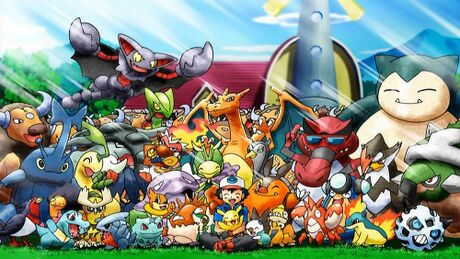
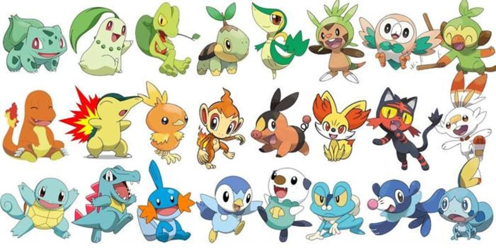

The Many Different Pokemon
It all started a while back with 151 different Pokemon. Now today there is over 1,000 different Pokemon species. All these species differenciate in size, type, and even forms of Pokemon. Think of them in the same way we know animals in our world. A huge part of Pokemon is being able to learn about all the different types of Pokemon on your journey to discovering these new species. Along your way in discovering and catching them, you'll also learn how to evolve them, which you can also relate to animals in terms of them growing up. This world is full of these unique creatures, and with every discovery of a new species the deeper you can fall in love with Pokemon.
The Generations of Pokemon
Learning to Battle
A major part of the shows and games are battling your pokemon. Even more when playing the games, and this is such a fun factor about them. You don't just catch Pokemon and expect them to fight each other. You have to train them and grow them so they are able to learn different kinds of movesets to better your chances in batlle. Not only are movesets advantageous, the types of Pokemon and how effective they are against other types plays an important role as well. These types in Pokemon are basically elements from our world; fire, water, ground, grass, and even other types that are not much of element focused such as bug, dragon, flying, and many more. All these types have their strengths against some, and weaknesses against others so learning all of this can give you the edge in battle. That's if you care to become the best trainer there is to be.